Transkribus: Reviewing HTR training on (Greek) manuscripts
Table of Contents
Abstract
Transkribus is a fully developed GUI (graphical user interface) platform offering (among others) the possibility to train HTR models with AI. It supports auto-transcription and searching of historical documents and is oriented towards Archives, Libraries, and researchers. This review describes most of Transkribus’ features by outlining the results of a project researching HTR on Greek manuscripts. Transkribus proves to be a useful solution for painlessly implementing state-of-the-art technology on Humanities, regardless of technical expertise or resources’ limitations. Any discussion in this review for further development of the platform is only provided given some of the Greek manuscripts’ peculiarities.
Introduction
OCR and most recently HTR technologies have proven to be of assistance in several scientific fields offering ever-evolving solutions for off-/online text recognition. Among those, Humanities and especially research on manuscript tradition(s) could benefit a lot from the progress of such technologies. Transkribus is one of the very few projects which have fully developed a ready-to-use tool for training HTR models via ΑΙ (Artificial Intelligence) to automate historical documents’ transcription.1 This review of the Transkribus platform is mostly based on personal experience with the software, gained through research regarding my PhD. I have extensively used Transkribus for testing automatic transcription of large document data sets, with a case study of witnesses containing John Chrysostom’s Homilies of Saint Paul’s Epistles to Titus. Part of my research results has been published at Classics@ 18, “Ancient Manuscripts and Virtual Research Environments” issue (Perdiki and Konstantinidou 2021). All points of this review take into consideration mostly the usability of the software in my field. No technical details are reviewed, as a result, an expert could cover that aspect.
Initially developed by the University of Innsbruck in 2013 and the Horizon 2020 EU research project READ in 2016 (Kahle et al. 2017), Transkribus is a cross-platform ecosystem continually being developed since 2019 by the READ-COOP SCE, a European Cooperative Society to sustain and evolve the project.2 Although not fully open source, its code can be found both in GitHub and in GitLab repositories, where is now solely stored (Kahle et al. 2017).3 Transkribus offers two main solutions for the automation of manuscript transcription. One could either work with the “Expert Client”,4 which has a very rich in features GUI (graphical user interface), or the “Transkribus Lite” option on a web browser,5 with a cleaner interface, yet a lack of some tools. In the course of my research, I have extensively used both solutions and specifically I have been working with “Expert Client” versions 1.10.0-1.16.1 on Windows (10 & 11, 64bit, Intel® Core™ i5-8265U 1.60GHz, 8GB RAM) and Linux (Mint 19.00, 32 bit, Intel Pentium T3200 dual-core processor 2GHz, 3GB RAM) and with versions 1.0.7-1.3.1 of “Transkribus Lite” on a Chrome browser (versions 93.0.4577.63-97.0.4692.99). Transkribus’ “Expert Client” requires a minimum Java version 8 to be properly executed.6 Apart from that, no other software or hardware dependency is necessary for the platform to be fully functional.
In general, Transkribus has been offered to the public as a freemium model, meaning that all versions (GUI and web-based) come free to use in most of their functionality, except for the ability to automatically transcribe documents with already trained HTR models. For that purpose, all signed up users acquire 500 free credits (equal to a 400 pages transcription) upon subscription and then move on to a payment method depending on their research needs. Other than that, Transkribus offers a scholarship programme as well, for selected students.7
Methodology and implementation
The need of accessing ancient/historical documents goes back to the first historians. People and especially scientists advance by studying sources of existing knowledge. It goes without saying that in recent years a lot of progress has been made in the field of text recognition – especially HTR, as a means to retrieve more quickly and efficiently historical documents. Transkribus builds upon that progress by integrating into one platform advanced technology tools such as HTR and layout analysis via neural network training, text to image matching, keyword spotting, TEI/XML mark-up tool, and even online collaboration on same document collections, as a form of a Virtual Research Environment (Perdiki and Konstantinidou 2021). Similar projects are a) eScriptorium,8 which seems to offer the same features but as a fully open-source application, b) python systems implemented with TensorFlow library,9 c) Kraken, an OCR system for historical documents,10 and d) Tesseract, the OCR engine developed by Google and mostly used in many projects.11 All the latter however presuppose advanced knowledge of coding and CLI (command-line interface).
So, if one would seek for Transkribus’ innovation in the field, they should not focus specifically on HTR technology and the applied algorithm (yet not to be denied of course), but rather on the possibility of HTR to be exploited by a vast majority of researchers. Due to its effective and user-friendly environment, researchers, archives/collections, and research centres across the linguistic variety of the world could easily access and make effective use of Transkribus’ features leading to general progress in Humanities. Ancient documents, undiscovered for many years, could now be massively and automatically studied, regardless of the language they are written in. As a result, valuable historical, literary, and linguistic information could be retrieved much quicker than in the past. More importantly, despite offering state-of-the-art tools as the pioneering possibility to train your neural network for text recognition at any historical document, emphasis should lay on the fact that this very function is completely possible even with a low-power hardware machine such as a 32- or 63bit laptop and few GBs of RAM (see ibid. “Introduction”, for the technical specifications). That software’s performance proves to be liberating for independent researchers or scientific projects with a low budget/workforce (Perdiki and Konstantinidou 2021).
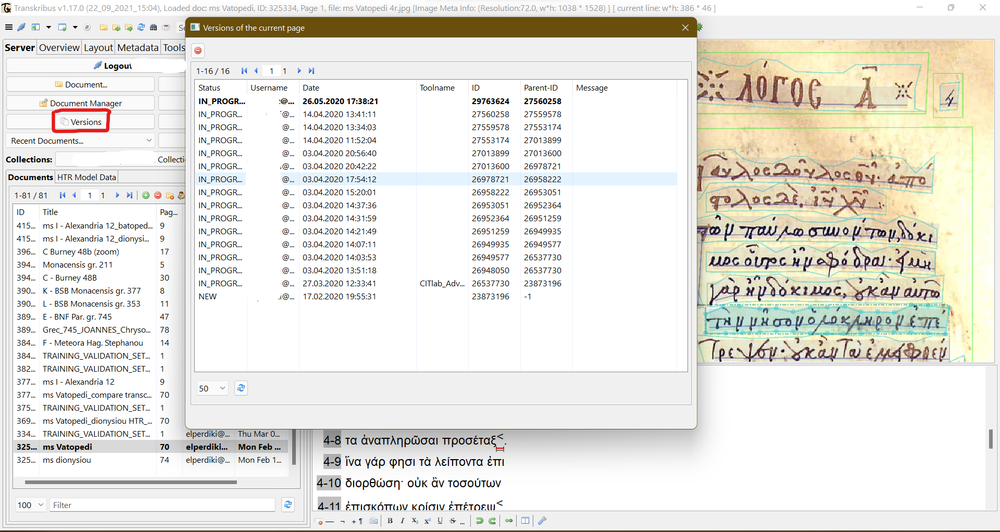
An Apache Solr indexing solution provides keyword spotting through full-text search. The interface has been written in Java and C++ alongside OpenCV and JNI. All this workflow is documented in detail in the paper “Transkribus - a Service Platform for Transcription, Recognition and Retrieval of Historical Documents” (Kahle et al. 2017). For layout analysis, certain tools are deployed provided by the National Centre of Scientific Research ”Demokritos” (NCSR), the Computer Vision Lab (CVL) of the Technical University Vienna, and the Computational Intelligence Technology Laboratory (CITlab) at the University of Rostock (more on the matter can be found at Kahle et al. 2017). Text recognition is offered in two different ways: a) ABBYY FineReader 11 SDK is used for OCR (Optical Character Recognition) of printed texts and b) offline HTR engines provide manuscripts transcriptions via HMM (Hidden Markov Models) and language models, or RNN (Recurrent Neural Networks) and no language models, through developments from the Pattern Recognition and Human Language Technology (PRHLT) research centre, University of Valencia (UPVLC) and the CITlab and PLANET intelligent systems GmbH respectively (Kahle et al. 2017). All systems described above are responsible for the neural model training on the data provided by the users. Users annotate via Transkribus GUI relevant points of the manuscript images and provide ground truth data of transcription. Both segmented images and their transcriptions are then considered to be training data and, when selected, can be used to train an HTR model at a certain manuscript collection. A portion of the same data is defined by the user as the validation set, which is used post-training to evaluate the HTR performance of the model (Kahle et al. 2017).
An instance of Transkrib-ing
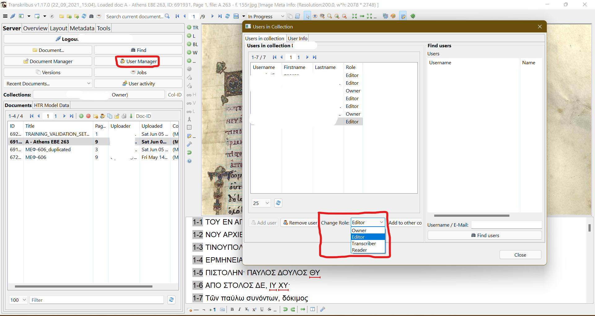
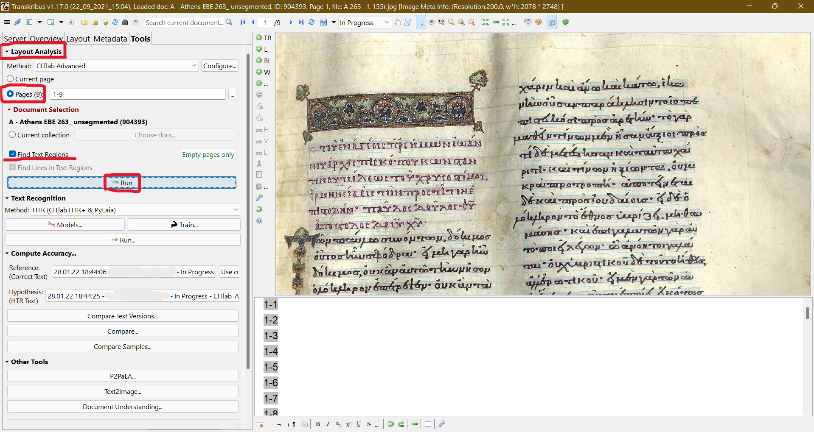 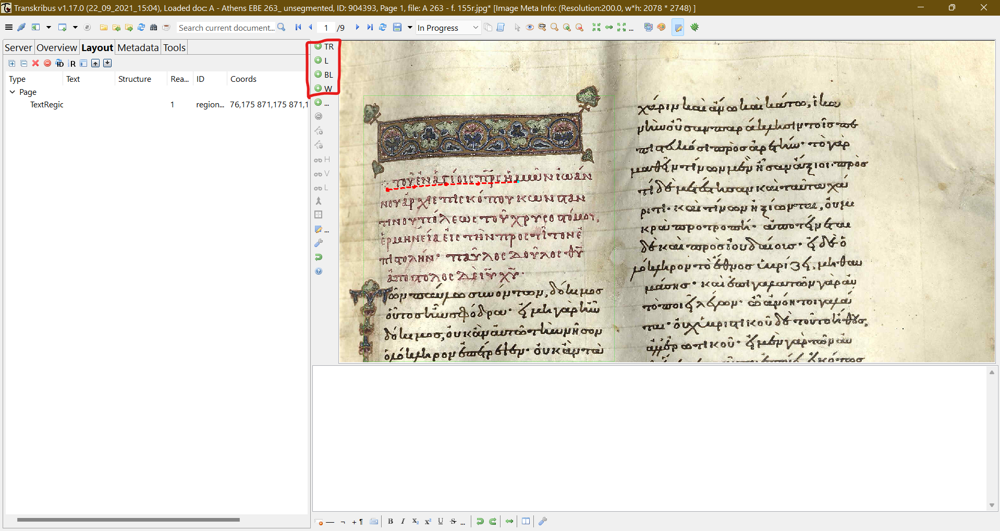
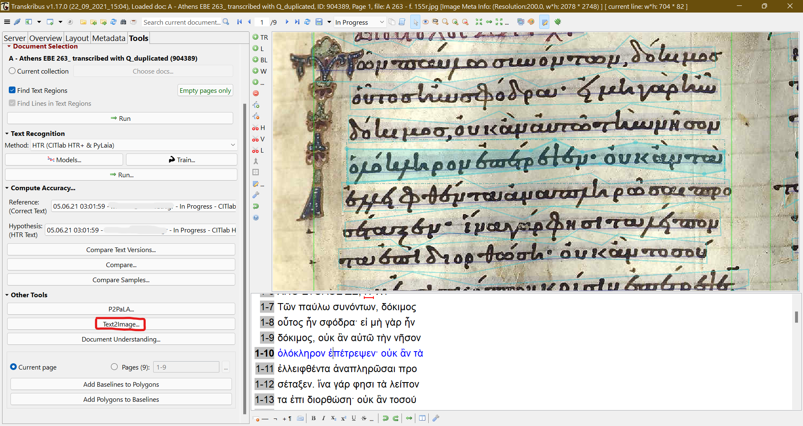
Some discussion has arisen on how much data and epochs (number of times a learning algorithm sees the complete dataset) are necessary for successful training of any neural network really but also regarding HTR (Ströbel, Clematide, and Volk 2020). For instance, Transkribus guidelines recommend a minimum transcription of 5,000–15,000 words and 50 epochs, depending on the format of the text;12 printed texts require less data than manuscripts, due to the uniformity of the script style. Other researchers have experimented successfully with less data (Perdiki and Konstantinidou 2021) or have argued about why and when more data and more epochs could result in overfitting, meaning to worsen the HTR results (Rabus 2019). Decision on the matter should be made after taking into consideration
- the quality of the images,
- the uniformity of the script and/or the existence of more than one scribes (Perdiki and Konstantinidou 2021),
- the utilisation of an already fully trained model in the same language (as a base model), which could boost up the training process, and
- the research goals; a searchable text requires less HTR accuracy than a text to be included in a critical edition (some of those aspects are discussed at Perdiki and Konstantinidou 2021).
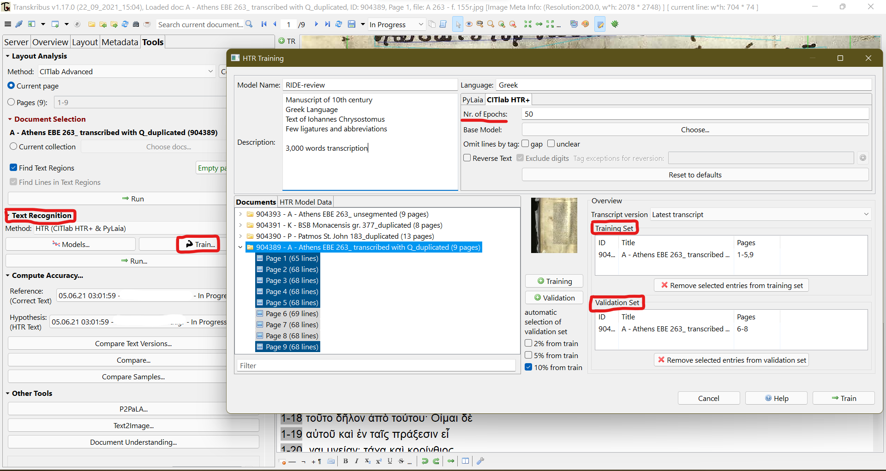
- name and description of the model,
- the language in which text is written [really any language at all or even more than one in the same document – I have already successfully trained models for Greek manuscripts from the 10th–14th c. A.D. (Perdiki and Konstantinidou 2021) and there are also few projects, that have worked with non-Latin scripts as Arabic or with multiple languages in the same model13,
- desired Nr. of epochs (system default is 50) and
- setting the pages that will be utilised as a training set and those to be used in validation (see fig. 6)
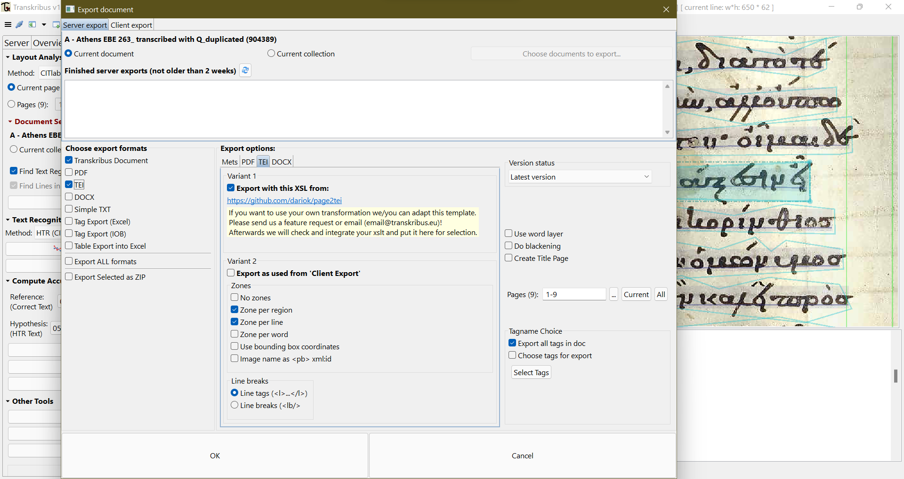
The accuracy and efficiency of Transkribus as a complete solution of HTR emerge from the high number of DH projects (independent researchers and archive collections) that have successfully applied the software to research related to historical documents.14 Moreover, Transkribus has been researched by scholars of non-Latin alphabet scripts, such as Greek or Cyrillic alphabets, enlightening thus the methodology relevant to the implementation of HTR technology (Rabus 2019; Perdiki and Konstantinidou 2021; Burlacu and Rabus 2021). Despite, individual differences originating from the distinctiveness of every historical collection/script, all those projects feature one common conclusion: HTR technology, especially when provided in a user-friendly environment, can and will undoubtedly speed up and facilitate research in Humanities.
Usability and user’s support
The scope and the length of this review do not allow for further, more detailed demonstration of all aspects and possibilities Transkribus can provide to manuscripts research. Yet, because of the richness of the platform’s tools and the sense of complexity these tools may develop to any user, the Transkribus team has provided extensive and sustained documentation of the platform titled “Resource Centre”15. What used to be a wiki database, is now an .html format of all relevant information, which inform beginners or expert users for every aspect of the software. From installation instructions (covered by relevant step to step screenshots) to how-to guides of most sophisticated features, FAQs, glossary, and even YouTube video tutorials, Transkribus knowledge is gathered in one efficient portal. The same “Help” function is also available in a button form, from the GUI of both “Expert Client” as well as “Transkribus Lite.” An extra section of the documentation offers more information on the REST API provided by Transkribus, should any user like to implement it in another software.16 In the occasion that none of this documentation offers enough help, users could easily contact the Transkribus team via a relevant email address. From my own experience, a member of the team usually gets back to you within a day and kindly offers a solution or at least guidance towards one. If there are absolutely no solutions to a specific problem or in the case of a malfunction, users can easily report a bug or request a feature directly from the GUI of “Expert Client.” A similar feature is not currently available at “Transkribus Lite” version. Apart from that functionality, users cannot provide any actual contribution to the enhancement of the platform. All maintenance is developed under the READ project (Kahle et al. 2017) and the READ-COOP SCE – hence the freemium model, fundings of which supports Transkribus’ further development.17
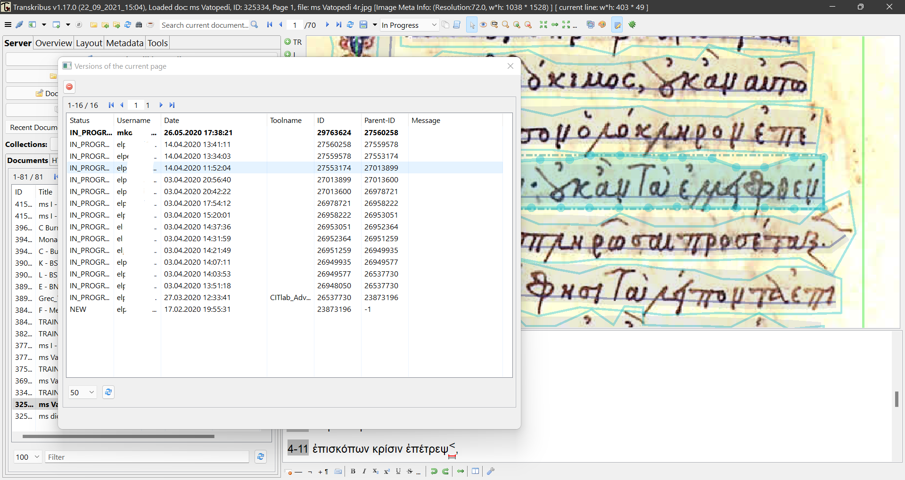
The other side of Transkribus’ portability and interoperability comes (although not seamlessly) in the form of users’ data management. Treatment of all users’ data is described and determined in the relevant “General terms and conditions” page of Transkribus website,18 but it can be summarised under the statement: “A collection is private by default. […] Transkribus team has the right to use uploaded material for testing and improving its services.” (Kahle et al. 2017). An issue may arise regarding that policy because all data is stored and handled in Innsbruck, Austria, servers, meaning that any usage of the platform must comply with the EU GDPR law (General Data Protection Regulation). According to §8.3 of the “General Terms and Conditions” Transkribus page,19 users can delete uploaded training and non-personal data, yet READ-COOP SCE may preserve copies of it. Considering the debatable section of GDPR “Data Deletion and Modification” (Haque et al. 2021), as well as the discussion on whether AI training data might be/contain personal data (Liu et al. 2021), Transkribus’ handling of users’ content seems questionable. Equally, unresolved is §8.5 in which is stated that users must ensure copyright licences for all uploaded data. That is a fair point, but a question arises on whether or not one conflicts with copyright law by using protected data in an AI training process, without distributing in public the data per se but only the research results derived from those data – a question partially answered by the §8.4, which declares that READ-COOP SCE “[…] grants the Customer all exclusive, transferable, sublicensable, worldwide indefinite rights […]” when recognition results concern copyrighted material. Although no violation of data seems to take place, researchers should carefully read “General Terms and Conditions” before deciding if they accept the management of their data.
Interaction, GUI, and visualisation
Whilst normally training neural networks requires technical expertise, firm knowledge of programming languages and coding in general, Transkribus provides the user with a compact, fully-featured, yet easy to grasp graphical environment. With the supplement of the detailed documentation, no expert knowledge is necessary for a user to start training an AI model. Thus, Transkribus’ users could either be experienced scholars/librarians or even inexperienced, simple users (students or else), which could provide valuable crowdsourcing input.
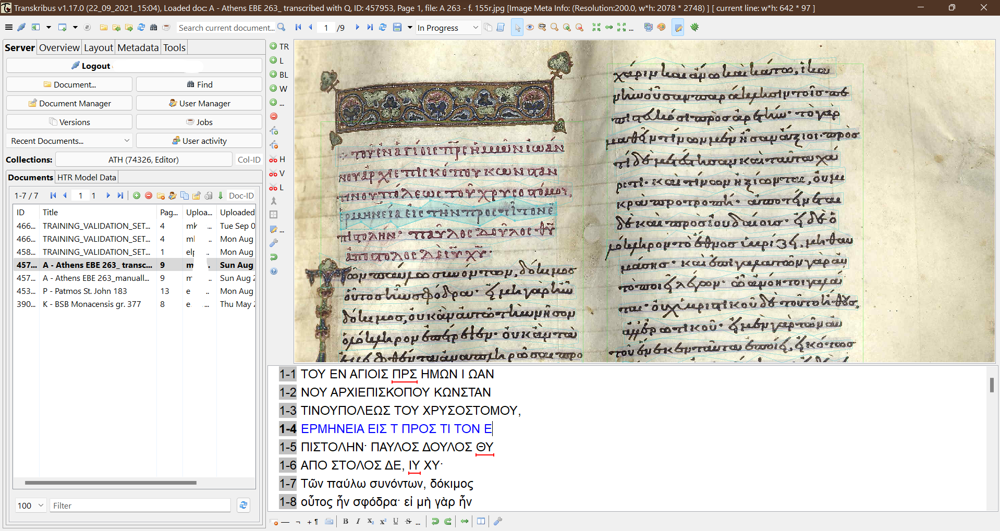
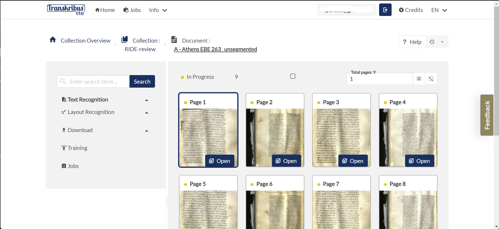
Up until recently one could only view and transcribe documents in the web version of the platform. Yet in the recent updates more functions became available and for the moment the following are possible: a) collections’ management, b) images’ uploading, c) documents’ view and editing/transcribing, d) text searching, e) HTR training or/and recognition, f) jobs viewing (as in tasks progress) and g) credit manager (as in checking credits’ balance).20 Lastly, despite offering the aforementioned rich in features graphical interface and the web-based version, there is also a possibility to make good use of Transkribus’ functions within third-party applications through a RESTful API (Kahle et al. 2017). Full documentation of it is provided at the Resources Centre of Transkribus, as mentioned above (see ibid. “Usability and user’s support” section).
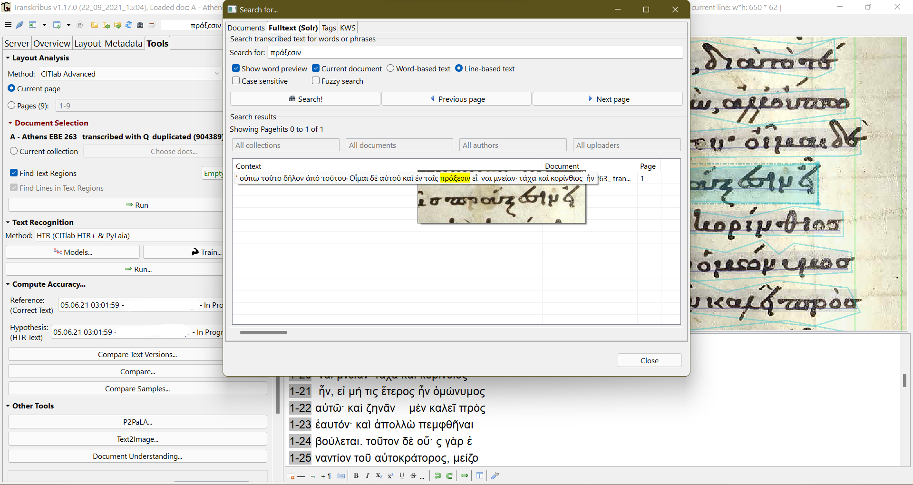 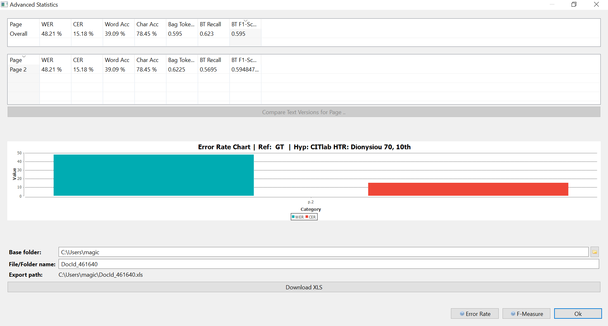 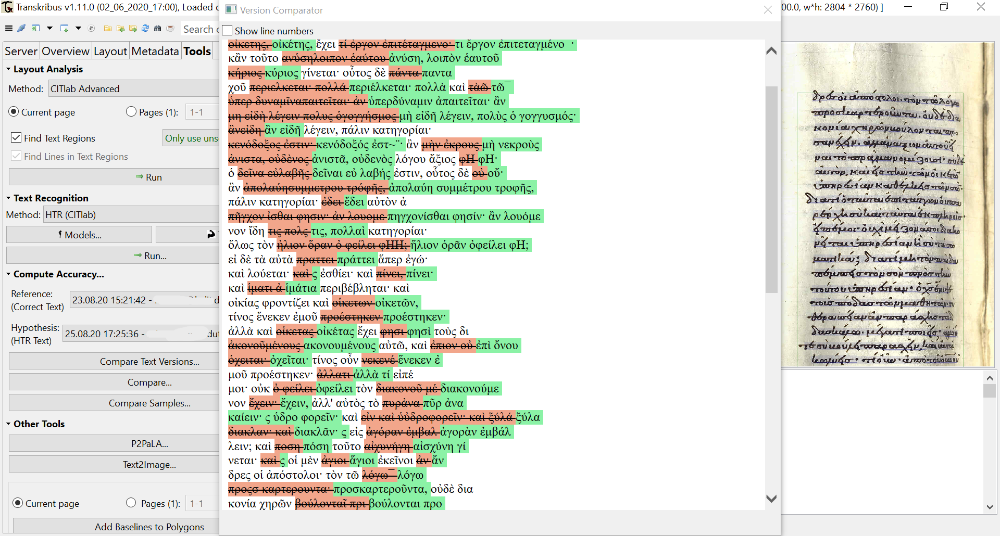
Conclusion-Desiderata
In the era of an exponential development of technology and under the real influence of AI in every aspect of the modern world, exploitation of state-of-the-art software/hardware in Humanities comes as a necessity. Accumulated historical knowledge of the past is patiently waiting in archives and collections to be researched. But human experts could not be enough to manually transcribe all that big data of Humanities. With that in mind projects that develop software for HTR, or any other form of ancient text mining are particularly welcome.
However real the need for technical assistance in the field of manuscripts’ research, scholars do not always prove to be tech-savvy. On the other hand, because software is mostly produced (as expected) by developers-experts in their field, most DH projects are technically sophisticated and cannot thus be mainstream. What is not fully understood or difficult to use, most probably will not be used at all (see for instance the distinction between Windows and Linux users, despite Linux proving to be equally, if not more, efficient). Transkribus differentiation from similar projects is exactly the fact that the platform successfully empowered simple users with the potential of neural networks training. It offered AI in a simple and functional package, which already proves to move forward research in Humanities, as small research groups or independent researchers liberated themselves from expensive or complicated technology.
Transkribus capability to be trained in reading any language is of course expected due to the technical architecture of the software (i. e., recognise characters structure and not language semantics), it is admirable nevertheless, especially with non-Latin alphabets. Greek manuscripts, which are the sole core of my experiments with Transkribus, have many peculiarities in style and format. Regardless of the wide chronological range of my data (10th–14th c. A.D.) and experiments with small datasets, Transkribus performance was always formidable. The factor of uniformity that characterises Greek medieval manuscripts was of course helpful to that direction. Even in the case of low-quality manuscript images, automatic layout analysis was hardly erroneous and upon several required transcription data, models would perform in the worst case under 20% of CER. For projects that do not necessitate high accuracy results, or for those with small datasets, that percentage of CER is more than accepted; it is usable.
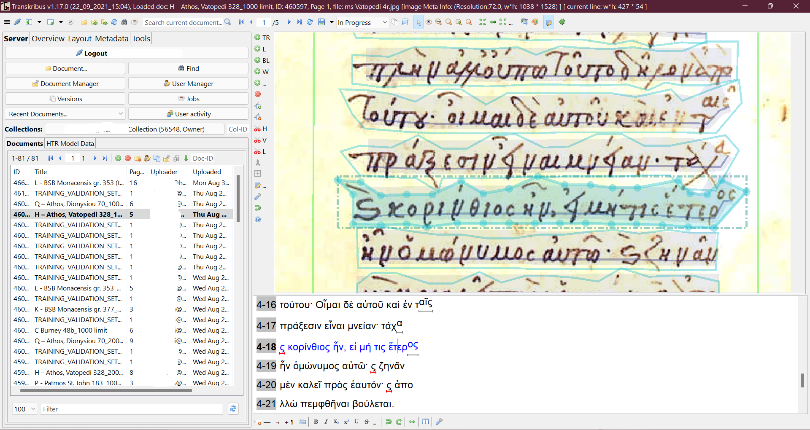
In the same context, the already existing and extremely useful virtual keyboard of special characters could be further enriched in collaboration with palaeographers. For the moment it is possible to add custom Unicode characters that will represent ligatures or other non-Latin characters of the manuscripts, but Greek ligatures are underrepresented and could be further supplemented. That way one would not have to use incorrect symbols or letters, because in that case there is the risk to confuse the neural network by teaching it to read the same letter in multiple instances: i. e. I was transcribing the ligature representing the word καὶ with a combination of characters, the most visibly similar ς` (see fig. 14). Eventually, that choice proved to be successful, but surely it was counterproductive as well. Such minor implementations could be extremely beneficial for end-users, who prefer a complete-suit software as Transkribus than a CLI package.
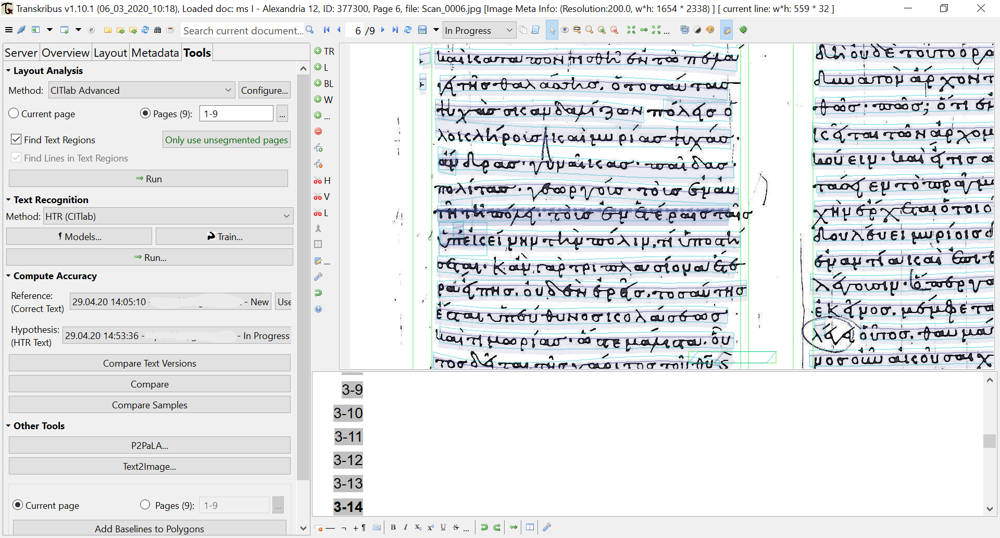
Finally, as DH projects do make progress in and exploit the field of AI, we should move on to research the validity of the trained models. It is common practice to evaluate HTR models on the CER percentage of validation sets. Although, due to the complexity of real, raw data, which have not been previously curated by a researcher, evaluation of HTR models probably should not rely only on CER of validation sets, but could also include explanation techniques that may help us decide further steps on the research (Ribeiro, Singh, and Guestrin 2016). The main questions are: a) how do we know if these metrics are correct or misleading and b) how easy is it to inspect training or validation data when dealing with big manuscript data? Researchers, we, should be able to trust the (trained by us) models.
Bibliography
- Burlacu, Constanța, and Achim Rabus. 2021. ‘Digitising (Romanian) Cyrillic Using Transkribus: New Perspectives’. Diacronia 2021 (14): A196–A196. https://doi.org/10.17684/i14A196en.
- Coulson, Frank T., and Babcock, eds. 2020. The Oxford Handbook of Latin Palaeography. The Oxford Handbook of Latin Palaeography. Oxford University Press. https://doi.org/10.1093/oxfordhb/9780195336948.001.0001.
- Haque, Akm Bahalul, A. K. M. Najmul Islam, Sami Hyrynsalmi, Bilal Naqvi, and Kari Smolander. 2021. ‘GDPR Compliant Blockchains–A Systematic Literature Review’. IEEE Access 9: 50593–606. https://doi.org/10.1109/ACCESS.2021.3069877.
- Kahle, Philip, Sebastian Colutto, Gunter Hackl, and Gunter Muhlberger. 2017. ‘Transkribus - A Service Platform for Transcription, Recognition and Retrieval of Historical Documents’. In 2017 14th IAPR International Conference on Document Analysis and Recognition (ICDAR), 19–24. Kyoto: IEEE. https://doi.org/10.1109/ICDAR.2017.307.
- Liu, Bo, Ming Ding, Sina Shaham, Wenny Rahayu, Farhad Farokhi, and Zihuai Lin. 2021. ‘When Machine Learning Meets Privacy: A Survey and Outlook’. ACM Computing Surveys 54 (2): 31:1-31:36. https://doi.org/10.1145/3436755.
- Perdiki, Elpida, and Maria Konstantinidou. 2021. ‘Handling Big Manuscript Data’. Edited by Claire Clivaz and V. Allen Garrick. Classics@ 18 (Ancient Manuscripts and Virtual Research Environments, special issue). https://classics-at.chs.harvard.edu/classics18-perdiki-and-konstantinidou/.
- Pletschacher, Stefan, and Apostolos Antonacopoulos. 2010. ‘The PAGE (Page Analysis and Ground-Truth Elements) Format Framework’. In 2010 20th International Conference on Pattern Recognition, 257–60. Istanbul, Turkey: IEEE. https://doi.org/10.1109/ICPR.2010.72.
- Rabus, Achim. 2019. ‘Recognizing Handwritten Text in Slavic Manuscripts: A Neural-Network Approach Using Transkribus’. Scripta & E-Scripta 19: 9–32.
- Ribeiro, Marco Tulio, Sameer Singh, and Carlos Guestrin. 2016. ‘“Why Should I Trust You?”: Explaining the Predictions of Any Classifier’. ArXiv:1602.04938 [Cs, Stat], August. http://arxiv.org/abs/1602.04938.
- Ströbel, Phillip Benjamin, Simon Clematide, and Martin Volk. 2020. ‘How Much Data Do You Need? About the Creation of a Ground Truth for Black Letter and the Effectiveness of Neural OCR’. In Proceedings of the 12th Language Resources and Evaluation Conference, 3551–59. Marseille, France: European Language Resources Association. https://www.aclweb.org/anthology/2020.lrec-1.436.
Notes
- https://web.archive.org/web/20211108183341/https:/readcoop.eu/transkribus/ ↑
- https://web.archive.org/web/20211213175714/https://readcoop.eu/about/ ↑
- https://web.archive.org/web/20211213181217/https://github.com/transkribus/ and https://web.archive.org/web/20211213184430/https://gitlab.com/readcoop/transkribus respectively. ↑
- http://web.archive.org/web/20211113063459/https://readcoop.eu/transkribus/download/ ↑
- http://web.archive.org/web/20220119164148/https://transkribus.eu/lite/ ↑
- See “Supported Operating Systems” at: https://web.archive.org/web/20220123181926/https://readcoop.eu/transkribus/howto/how-to-download-install-and-run-transkribus/. ↑
- More about pricing options, studentship and credits’ management can be found at: http://web.archive.org/web/20211118014952/https://readcoop.eu/transkribus/credits/. ↑
- More information about the project can be found at: https://web.archive.org/web/20220102050954/https://escriptorium.fr/ . ↑
- See for instance “SimpleHTR” project at: https://web.archive.org/web/20220124180144/https://github.com/githubharald/SimpleHTR. ↑
- More information about the project are available at: https://web.archive.org/web/20220129152558/http://kraken.re/master/index.html. ↑
- Tesseract repository can be found at GitHub: https://web.archive.org/web/20220125061256/https://github.com/tesseract-ocr/tesseract. ↑
- As defined in Transkribus’ documentation: https://web.archive.org/web/20220130213434/https://readcoop.eu/transkribus/howto/use-transkribus-in-10-steps/. ↑
- See for instance the multi-language model trained on 6 different languages and centuries data: https://web.archive.org/web/20220130101732/https://readcoop.eu/model/transkribus-print-multi-language-dutch-german-english-finnish-french-swedish-etc/, or the experiments conducted on Arabic manuscripts by Dr Adi Keinan-Schoonbaert, Digital Curator for Asian and African Collections, British Library: https://web.archive.org/web/20210416133914/https://blogs.bl.uk/digital-scholarship/2020/01/using-transkribus-for-arabic-handwritten-text-recognition.html. ↑
- Transkribus has dedicated a page informing for such projects at: https://web.archive.org/web/20220129182000/https://readcoop.eu/success-stories/. See also the crowdsourcing UCL’s Bentham Project: https://web.archive.org/web/20220130135024/https://www.ucl.ac.uk/news/2019/aug/transcribing-brunels-illegible-handwriting-using-ai/. ↑
- https://web.archive.org/web/20220130141552/https://readcoop.eu/transkribus/resources/. ↑
- https://web.archive.org/web/20220130144402/https://readcoop.eu/transkribus/docu/rest-api/. ↑
- See ibid. “Introduction” and note 3. ↑
- https://web.archive.org/web/20211106145137/https://readcoop.eu/terms-and-conditions/. ↑
- See ibid note 18. ↑
- All functions along with relevant screenshots are available at: https://web.archive.org/web/20220121150815/https://transkribus.eu/lite/. ↑
@article{transkribus,
author = {Perdiki, Elpida},
title = {Transkribus: Reviewing HTR training on (Greek) manuscripts},
journal = {RIDE – A review journal for digital editions and resources},
number = {15},
year = {2022},
doi = {10.18716/ride.a.15.6},
url = {https://doi.org/10.18716/ride.a.15.6},
}TY - JOUR
AU - Perdiki, Elpida
TI - Transkribus: Reviewing HTR training on (Greek) manuscripts
T2 - RIDE – A review journal for digital editions and resources
IS - 15
PY - 2022
DA - 2022/12
DO - 10.18716/ride.a.15.6
UR - https://doi.org/10.18716/ride.a.15.6
PB - Institut für Dokumentologie und Editorik e.V.
LA - en
ER - Perdiki, E. (2022). Transkribus: Reviewing HTR training on (Greek) manuscripts. RIDE – A review journal for digital editions and resources, (15). https://doi.org/10.18716/ride.a.15.6Perdiki, Elpida. "Transkribus: Reviewing HTR training on (Greek) manuscripts." RIDE – A review journal for digital editions and resources, no. 15, 2022. https://doi.org/10.18716/ride.a.15.6.Perdiki, Elpida. "Transkribus: Reviewing HTR training on (Greek) manuscripts." RIDE – A review journal for digital editions and resources, no. 15 (2022). https://doi.org/10.18716/ride.a.15.6.